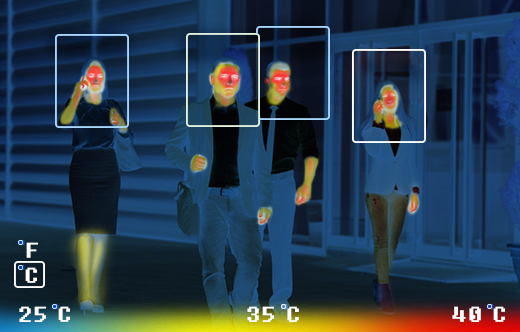

Multifunctional Screening Robot
 With the rapid worldwide spread of Coronavirus (COVID-19 and COVID-20), wearing face masks in public becomes a necessity to mitigate the transmission of this or other pandemics. To automate the various mandatory health checks, we created a robot.
Mask detection:
We utilize sophisticated CNN models for facial recognition systems with mask detection that can swiftly identify and track everyone in a crowd as they move, while also assisting in the identifying of unmasked persons and restricting access.
Thermal scanning:
We employ digital temperature sensors to support the various applications' wide range of accuracy and performance criteria. People infected with coronavirus may have a temperature reading of 38 degree celsius and higher. Code is written in Arduino Studio wherein the threshold temperature is set. If the temperature is higher than the threshold, red LED lights up, if not, green LED lights up.
Automatic hand sanitization:
A circuit is built using an IR sensor, motor and pump. When the user's hand is detected, the sanitizer is automatically dispensed.
Arduino is used to centralize the three circuits mentioned above.